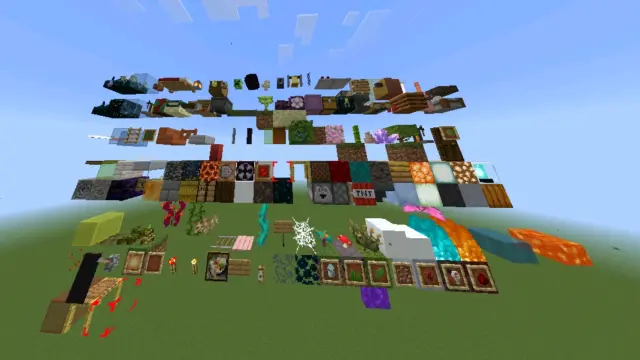
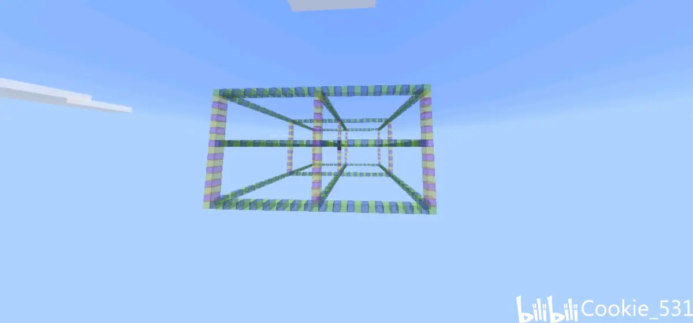
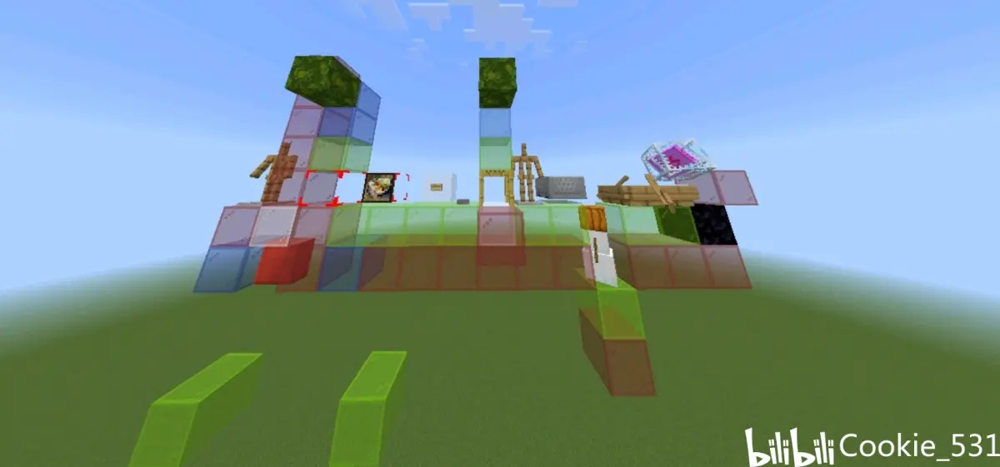
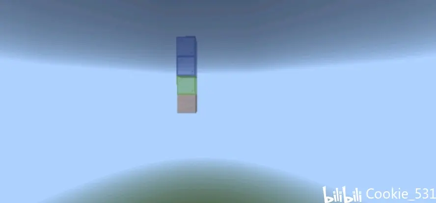
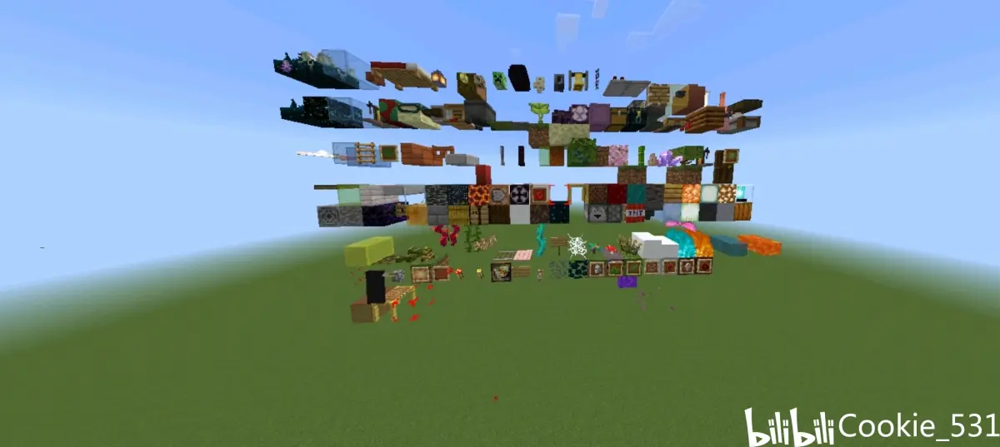
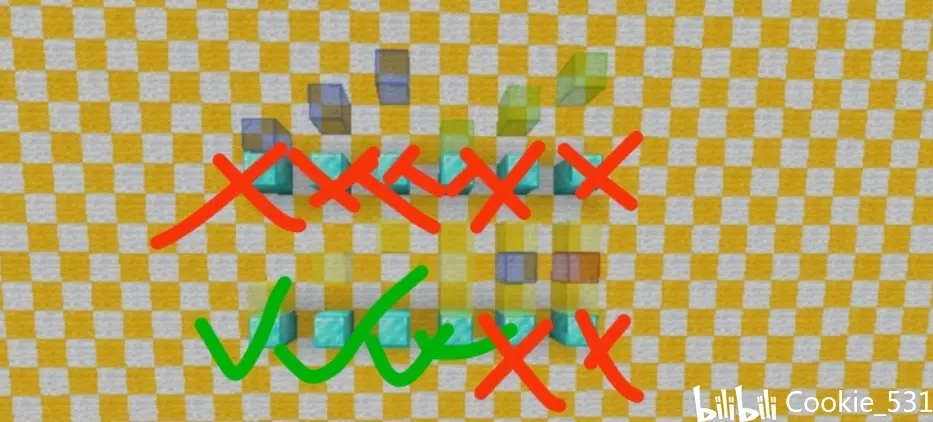
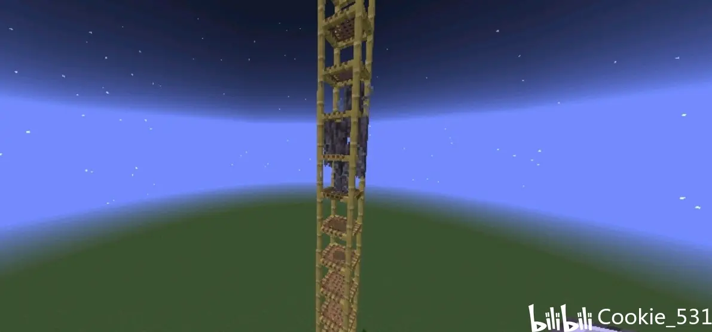
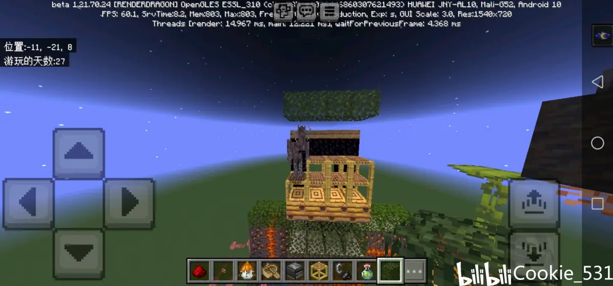
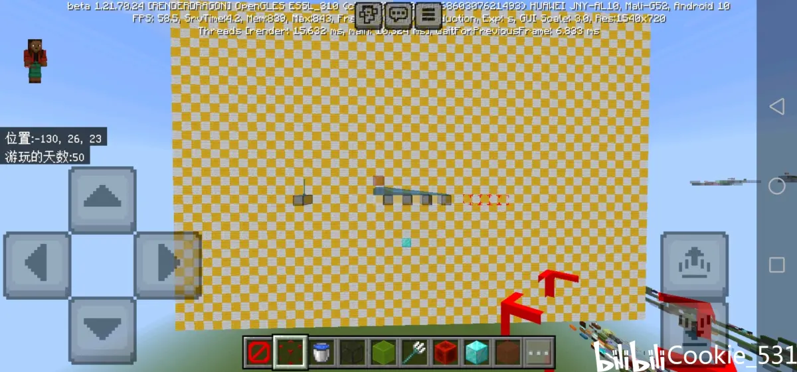
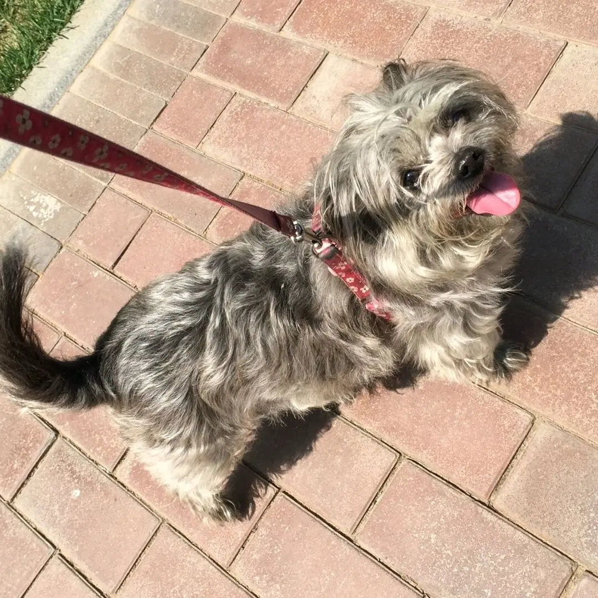

本文多为1.21.70测试所得，且非全版本测试所得结论，固慎重观看。
前提：生物可生成 黑夜 嘎枝核心被激活 非和平 玩家不处于伪加载
①.嘎吱树脂产生cd～近似5s
其可看作为一 以嘎枝核心为中心的 31x*17y*31z的立方体 在其中选点 生成于偏方块中心处.

上为大致示意图 中心为嘎枝核心 x两边向外延伸了15 图中为16 y上8下8 z向外延伸15图中也是16 过了一定范围也会消失 包括自带的约30格的消失和区块/重载随机消失。
2.消失
不同于生成范围 离核心过远后会自己despawn掉
新版本的嘎吱命名后正常情况下不会白天消失
区块丢实体对嘎吱仍然适用
在新版本 ，oj将套皮逻辑贯彻到底。 在范围内 ，嘎吱的生成尝试仍然是在范围内寻找一个x z 并从最高处向下寻找第一个可生成类方块进行尝试

一些案例示意图 绿色为可向下可生成方块/继续尝试 红色为不可生成/不向下继续尝试 蓝色表示其在范围内可去遍历用的检测范围
1.如果选点选在了范围上方的临界处 则不会向上寻找尝试点 固可以做到如后文一样的“连续脚手架/结构空位”不阻挡生成。
2.边界和其延伸类会直接占用尝试并生成失败 。
尝试后向上检测的范围

接上文 选点后 开始检测 检测范围示意：绿色为嘎枝脚部 蓝色为检测范围延伸。
嘎枝会在夜晚在其生成范围内寻找点位并进行“检测”，与其他大部分实体不同的是，其不仅会检测生成点位上方的方块类型 还会检测其上方1*3*1范围内的实体和其类型。那么，方块与实体如何分类呢？
方块主要可以分为四种

蓝色玻璃：不可生成 阻挡生成
黄色玻璃：不可生成 不阻挡生成
绿色玻璃：可生成 阻挡生成
红色玻璃：一定条件下 可生成 不阻挡生成

1不阻挡生成 可生成
已知目前版本案例为脚手架，结构空位。 值得一提的是 ，他们仅在向上范围的临界处即可刷又不阻挡，在范围非最上一层一旦检测范围内存在其他可生成则选取上方进行生成尝试。
所以其实没啥大用 （仅用于临界）


2不阻挡生成 不可生成
eg 大部分植物 下界传送门 花 树苗 藤蔓 诡异藤蔓 红藤蔓 水 岩浆 细雪 火焰 幽灵蓝火 展示框 压力板 绊线钩 拉杆 线 光源方块 画（实体） 泡菜 黑板 未知（火把状）花瓣 落叶 幽匿脉络 光源方块 珊瑚扇 xx珊瑚 萤火虫灌木丛 甜浆果 告示牌 蘑菇 黑板
3阻挡生成 可生成
大部分方块eg 上表面完整的楼梯 与方块上方平齐的上表面完整的陷阱门 与方块上表面平齐且上表面完整的半砖（包括2合一）蘑菇方块 刷怪笼 关闭的栅栏门 基岩 岩浆块 未知1 催化剂 玻璃 木桶 脚手架/结构空位《不阻挡 但是抢选点》 蜂巢 工作台 重生锚点 投掷器 活塞本身 伸出活塞臂的活塞 tnt珊瑚块 错误方块 命令方块 结构方块 照相机方块 反应堆 信标 地狱疣方块 诡异菌方块
4阻挡生成 不可生成
eg 树叶 上表面不完整或不与方块上方平齐的陷阱门 上表面不完整的楼梯 下半砖 折跃门 末地门 紫松果 紫松花 可可豆 炼药锅 讲台 灯笼 红石中继器 红石比较器 蜡烛 尖啸体 幽匿传感器 末地传送门框 附魔台 铁砧 悬浮告示牌 按钮 堆肥桶 箱子 末影箱 潜影箱 沉重核心 潮涌核心 头颅 关闭的栅栏门 石墙类 栅栏类 玻璃板 铁栏杆 龙蛋 海龟蛋 侦查兽蛋 活塞臂 炼药锅 酿造台 箱子 边界 边界延伸的挤压类 耕地 梯子 mb（存疑） 化学版几个交互方块 水晶 滴水石笋
eg末影水晶 底座水晶 无敌水晶 怪物/动物实体 盔甲架 船（all kinds） 矿车（all kinds）
eg三叉戟 箭矢（all kinds ） 鸡蛋 凋零头 恶魂火球 画 展示架（这弔东西先扔实体里）

如图所示 你也可以用玩家加平台寻路。

相关链接
上一个测试版的部分机制研究----变异兔子@离殇之枫